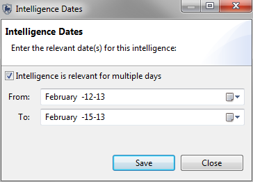
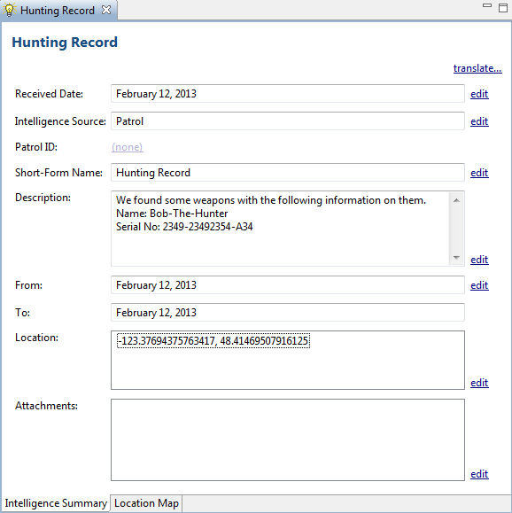
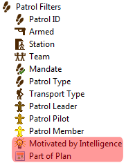

Intelligence records are pieces of information that have been gathered through previous patrols or from external sources. Information from intelligence records can be used by Conservation Area managers to help plan future patrols.
There are 6 steps in creating a new Intelligence record:
1. Intelligence Received Date - Enter the date received
2. Intelligence Source - Select the source of this information. The basic types are:
Patrol - gathered directly by a previous patrol
Public - from an unassociated public member
Informant - a person with some ties to the Conservation Area
Community Extension Team (CET) - Separate Forest Department or NGO teams working with local communities
NOTE: Managing Intelligence Sources:
Under the Intelligence menu, click "Intelligence Sources..." to open the intelligence source type editor. Using the "Add" Buton you can add custom sources of your own.
You may also edit the names or disable existing intelligence source types using this screen.
3. Intelligence relevant for Multiple Days -
If the incoming intelligence is to cover activity that spans multiple days, then in this step you should check the box and enter in the appropriate dates.

4. Intelligence Name and Description - Enter a name and description
5. Intelligence Location - Select the one or more relevant locations using the map tool, or by entering X/Y coordinates
6. Intelligence Attachments - Attache any relevant files, images, etc to the record.
Your completed intelligence record will look something like this:

Plans with links to patrols can be queried with a Patrol Query using Patrol Filters. The patrol filter "Motivated by Intelligence" is to query any patrols associated with Intelligence Records. The patrol filter "Part of Plan" is to query any patrols that were associated with Plans.
